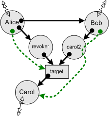
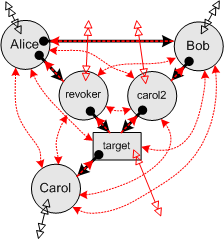

| |
Paradigm
Regained: |
||||||
Superseded by Robust Composition.
Proceedings of ASIAN'03, edited by Vijay Saraswat. Springer Verlag
Eighth Asian Computing Science Conference
Tata Institute of Fundamental Research, Mumbai India
December 10-13 2003
Versions
| Read this one. Revised to use modern E syntax ("return" rather than "^"). | OpenOffice2.0 | OpenOffice1.1 | Plain text | |
| Unabridged (21 pages), as HP Labs Tech Report HPL-2003-222 | OpenOffice1.1 | |||
| As it will appear in ASIAN'03 (20 pages) | ||||
| Earlier Johns Hopkins Systems Research Labs Tech Report SRL2003-03 | ||||
| As the second of the Google ABAC Techtalk series | Google Video | Powerpoint | ||
Abstract
Access control systems must be evaluated in part on how well they enable one to distribute the access rights needed for cooperation, while simultaneously limiting the propagation of rights which would create vulnerabilities. Analysis to date implicitly assumes access is controlled only by manipulating a system's protection state--the arrangement of the access graph. Because of the limitations of this analysis, capability systems have been "proven" unable to enforce some basic policies: revocation, confinement, and the *-properties (explained in the text).
In actual practice, programmers build access abstractions--programs that help control access, extending the kinds of access control that can be expressed. Working in Dennis and van Horn's original capability model, we show how abstractions were used in actual capability systems to enforce the above policies. These simple, often tractable programs limited the rights of arbitrarily complex, untrusted programs. When analysis includes the possibility of access abstractions, as it must, the original capability model is shown to be stronger than is commonly supposed.
At the Banquet: Mark
S. Miller, Kazunori
Ueda, ???, Fred
Spiessens
Photo by Vijay Saraswat
Supplemental Explanations
The following map of concepts may aid in following the paper:
The transition arrows show possible sequences of analysis. The terminology and the example are explained in the paper.
| Permission Now says what direct actions may happen now. This is the current arrangement of permissions, or state of the access graph, or protection state. Actually, it is only the portion of the subgraph we know, which already represents a bound on the actual graph. Analysis starts here. We see here the subgraph at the moment that Bob receives access to the Caretaker, carol2, assuming that Alice also drops her links to Carol and carol2. The double arrow going off the the diagram indicates our ignorance about who Alice, Bob, or Carol already have access to and who has access to them. |
|
| "<-" is the E symbol for "eventually", so this blob represents "eventual permissions". This includes all the permissions that various programs will actually acquire because other programs granted them those abilities. Since the actual behavior of other programs is intractable, calculating this is intractable. | |
| Authority says what effects programs may actually eventually cause, using both present and future permissions and the actual behaviors of other programs. Calculating this is intractable, so our analysis seeks safe approximations. An approximation is safe if it includes all actual authority. Because of the behavior of the revoker, Alice may affect target. Because the the behavior of carol2 and the state of target, Bob may affect Carol. Since this also affects the behavior of carol2, we show the green authority line including her in its path. |
 |
| Arrangement / Permissions is an arrangement-only bound on permissions, or potential de jure analysis, calculating possible arrangements of eventual permissions based only on the current arrangement. By itself it gives an unsafe result, as it ignores the dangers posed by programs interacting with each other. For our starting graph, this bound is no bound--everything becomes fully connected. In this case, the estimate is safe but useless, since it does not preclude any possibility. We should probably have a notational convention where a fully connected subgraph is simply aggregated into a single blob. After all, to our analysis, it no longer has any internal structure. |
 |
| Behavior / Permissions is a partially behavioral bound on permission, in which some program behavior is taken into account, in order to set tighter bounds. Assume we know that carol2, revoker, and target behave according to the Caretaker code. Assume we know that Carol's behavior is to not provide her clients with access to herself. We know nothing further of her behavior, or anything about the behaviors of Alice, Bob, or anyone beyond the horizon. The open arrowheads are connectivity that could only have come from prior connectivity beyond the horizon of our subgraph. If we didn't know anything about Carol's behavior, then the arrowheads on the Bob-to-Carol link would be closed. |
|
| Arrangement / Authority is an arrangement-only bound on authority, or potential de facto analysis. It is safe because it takes account of the dangers from program behavior. In this case, since the bound on permission was already all inclusive, the bound on authority cannot be any larger. |
|
| Behavior / Authority is a partially behavioral bound on authority, which is still safe, but less conservative, because it recognizes the possibility of using program behavior for good as well as evil. This bound can be used to determine if a security enforcing program can enforce a given policy objective. | |
| If we further assume that Alice sends a revoke() message to the revoker at time t1, we know this erases the link from target to Carol. Rerunning our analysis under these new conditions, a partially behavioral bound on authority shows that Bob no longer has authority to affect Carol, unless he separately obtains this authority by virtue of their possible joint connectivity beyond the horizon. |
Unless stated otherwise, all text on this page which is either unattributed or by Mark S. Miller is hereby placed in the public domain.
| |
|
report bug (including invalid html)
|
||||||||